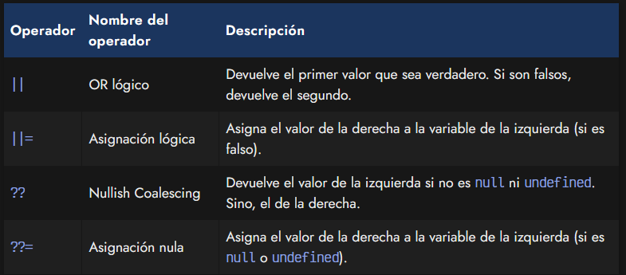
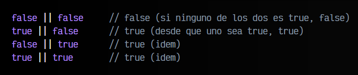
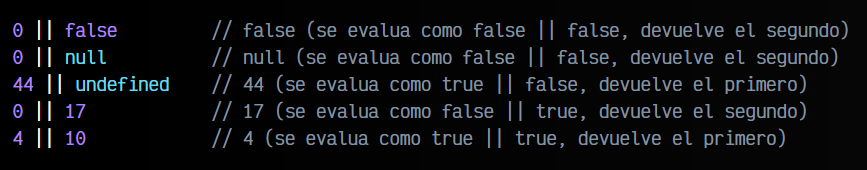
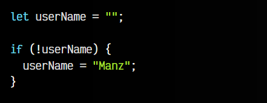
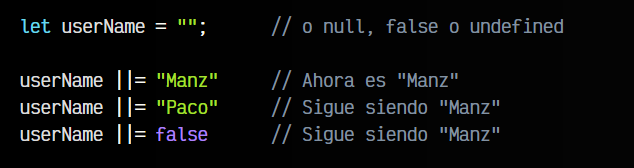
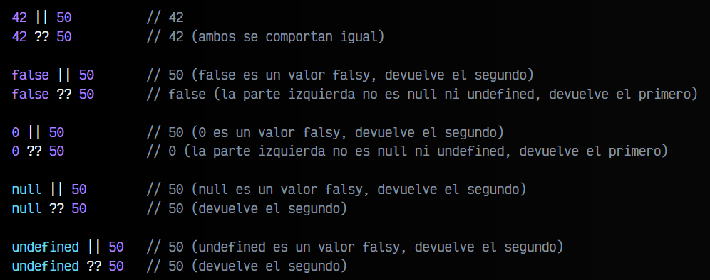
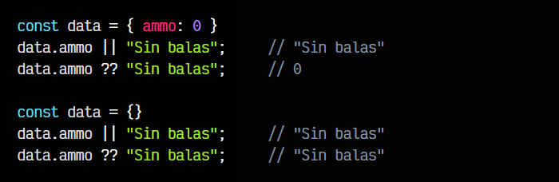
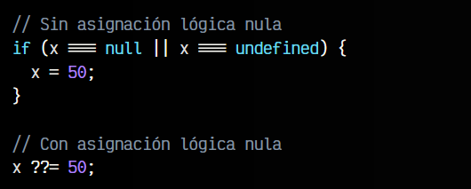
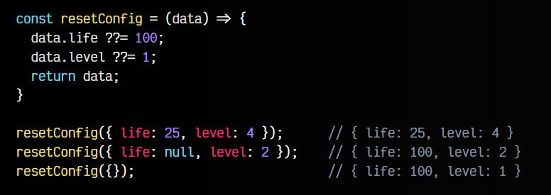

La Vega contrataca.

💻Por qué es importante Vanilla JS?
Ligereza y velocidad:
Una de las ventajas clave de Vanilla JS es que es ligero y rápido. Al no depender de bibliotecas externas, el código se carga más rápido y se ejecuta de manera eficiente.
Aprendizaje fundamental:
Al trabajar con Vanilla JS, uno puede comprender los conceptos fundamentales de JavaScript en profundidad. Esto es esencial para cualquier desarrollador web, ya que proporciona una base sólida para trabajar con cualquier biblioteca o framework en el futuro.
Flexibilidad:
Vanilla JS ofrece una flexibilidad total. No estás limitado por las restricciones de un framework en particular y puedes implementar cualquier funcionalidad de la manera que desees.
Compatibilidad:
El código Vanilla JS es compatible con todos los navegadores modernos, lo que significa que no tienes que preocuparte por problemas de compatibilidad.
💻¿Cómo se compara Vanilla JS con otros frameworks y bibliotecas?
Mientras que Vanilla JS tiene sus ventajas, también es importante entender cómo se compara con otras tecnologías populares.
React:
React es un framework de JavaScript desarrollado por Facebook que se utiliza principalmente para construir interfaces de usuario. Si bien React es potente y popular, puede tener una curva de aprendizaje más empinada para los principiantes en comparación con Vanilla JS.
Angular:
Angular, desarrollado por Google, es otro framework popular para la creación de aplicaciones web. Si bien ofrece muchas características útiles, también puede ser más complejo de aprender y utilizar en comparación con Vanilla JS.
Vue:
Vue es una biblioteca progresiva para la creación de interfaces de usuario. Es más ligero que Angular y React, lo que lo hace más fácil de aprender para algunos desarrolladores. Sin embargo, aún implica aprender una sintaxis específica y seguir ciertas convenciones.
💻¿Cuál es la mejor manera de aprender Vanilla JS?
La mejor manera de aprender Vanilla JS es practicando. Comienza con proyectos pequeños y aumenta
gradualmente la complejidad a medida que adquieres más experiencia. Además, hay muchos recursos en línea,
como tutoriales y documentación oficial, que pueden ayudarte a familiarizarte con los conceptos y las
mejores prácticas de Vanilla JS.
En resumen, Vanilla JS es una parte fundamental del desarrollo web. Aunque puede no tener todas las
características y comodidades de los frameworks y bibliotecas más populares, ofrece simplicidad, ligereza y
flexibilidad. Ya sea que estés comenzando en el desarrollo web o seas un desarrollador experimentado,
comprender y dominar Vanilla JS es esencial para construir aplicaciones web eficientes y de alta calidad.
Así que la próxima vez que te encuentres trabajando en un proyecto, ¡considera darle una oportunidad a
Vanilla JS y experimenta la magia de JavaScript en su forma más pura!
💻¿Qué es Vanilla JavaScript?
Última actualización:
29 de julio de 2024
Vanilla JavaScript , sinónimo de JavaScript puro o simple, evita las herramientas externas como bibliotecas
o marcos. Permite a los desarrolladores crear sitios web interactivos únicamente con JavaScript.
Si bien se
destaca en el desarrollo frontend, Node.js, un marco JavaScript, es el preferido para las operaciones
backend.
Hay muchos gigantes tecnológicos y no tecnológicos que actualmente utilizan Vanilla JavaScript en su base de
código. También se tuvo en cuenta que la cantidad de sitios web que utilizan Vanilla JavaScript es mucho
mayor que la cantidad de sitios web que utilizan jQuery.
Algunos de esos sitios web se enumeran en la
siguiente lista:
Google
YouTube
Facebook
Microsoft
LinkedIn
Netflix
Desbordamiento de pila, etc.
Como todos saben, todo tiene sus pros y sus contras. También existen algunas ventajas y desventajas de usar
JavaScript. Primero, analicemos las ventajas de usar JavaScript y luego las desventajas de usarlo.
Beneficios de aprender y usar JavaScript
JavaScript es un lenguaje con muchas funciones. Tiene muchos métodos y API integrados que podemos usar en
nuestras aplicaciones.
Estas funciones reducen la complejidad del código y nos ayudan a realizar algunas
tareas complejas con facilidad.
A continuación se explican algunos beneficios y razones para aprender y utilizar JavaScript:
Un amplio soporte para métodos integrados: JavaScript nos proporciona un amplio soporte y acceso a los
métodos integrados como map() , reduce() , filter() , call() , apply() , bind() , etc.,
lo que nos ahorra
tiempo y reduce la complejidad del código. Todos estos métodos se utilizan para diferentes propósitos y para
realizar diferentes tareas.
Sistemas de objetos basados en prototipos y clases: en JavaScript, se pueden crear objetos utilizando
clases y funciones definiendo sus instancias.
JavaScript también admite la herencia basada en prototipos y
clases para heredar las propiedades de otras clases y funciones.
Recorrido y selección del DOM: JavaScript nos proporciona un modelo de objetos de documento que consta de
una gran cantidad de métodos para seleccionar y recorrer diferentes elementos del documento.
El DOM de
JavaScript nos permite realizar cambios en el documento directamente, como cambiar el texto, el HTML
interno, los estilos y otras propiedades de un elemento.
Rendimiento: La ejecución del código JavaScript en los navegadores web es mucho más rápida que la de otros
lenguajes de programación.
El código JavaScript puede ser compilado y analizado directamente por el
navegador, a diferencia de los archivos HTML y CSS que deben descargarse antes de la ejecución y que afectan
al rendimiento web.
Facilita el aprendizaje y la implementación de los Frameworks: Si sabes cómo implementar JavaScript para
construir interfaces de usuario interactivas, entonces te será más fácil aprender e implementar frameworks y
bibliotecas de JavaScript como ReactJS, VueJS, AngularJS, NodeJS, etc.
Podrás usar fácilmente JavaScript y
sus frameworks juntos.
Tiempo de ejecución: La ejecución del código JavaScript se realiza en el lado del cliente, no requiere
ninguna herramienta externa para ejecutar el código, lo que hace que el proceso de ejecución del código
JavaScript sea muy rápido. La ejecución del código JavaScript tampoco se ve afectada por las llamadas del
servidor backend.
Reducción de la carga del servidor: JavaScript reduce la carga del servidor ya que el código JavaScript se
ejecuta en el lado del cliente, no afecta la carga del servidor y se ejecuta en el entorno del cliente.
💻Operador Nullish Coalescing.
Aunque el título del artículo es el Nullish Coalescing, en este artículo vamos realmente a hablar de cuatro operadores diferentes, que tienen bastante relación entre sí:

💻Operador OR lógico.
El operador lógico OR (||) establece una condición donde devolverá el primer valor si es true o el segundo si el primero es false. Esto se puede leer de forma sencilla de la siguiente forma: «devuelve a (si es verdadero), o si no, b»
Veamos algunos ejemplos reales, primero con boolean que es más sencillo de entender:
Sin embargo, ten en cuenta que podemos utilizar este operador con otros tipos de datos y no sólo con . En el anterior, los valores repetidos no hay que diferenciarlos: si false || false te da igual que false devuelva, simplemente es false.
Esto no ocurre con otros tipos de datos. Recuerda que en programación, cualquier valor numérico superior a 0 es considerado true como y que cualquier valor que sea 0 o falsy, es false.
Veamos algunos ejemplos:

Teniendo todo esto en cuenta, el operador || nos podría venir bastante bien para situaciones donde, por ejemplo, tenemos una variable name que no sabemos a ciencia cierta si está definida y queremos crear una nueva variable userName con el valor de name, o sino, un valor por defecto "Unknown name":
💻Asignación lógica.
Igual que tenemos la posibilidad de realizar asignaciones como += que son la mezcla de una asignación con una operación de suma, también podemos hacer lo propio con el operador lógico de asignación ||=, que une un operador lógico con una asignación.
Observa el siguiente fragmento de código:

Este código, podemos simplificarlo utilizando el operador lógico OR de asignación ||=:

Con ||= conseguimos que si el valor inicial de userName es un valor que se evalua como falso como null, undefined, 0, false o "", entonces realizará la asignación con el valor de la derecha. En caso contrario, si ya tiene un valor establecido que no es falso, no hará nada.
💻Operador Nullish coalescing.
El operador nullish coalescing (unión nula) es un operador lógico muy similar al operador OR, pero con ciertos matices y diferencias. A grandes rasgos, se puede decir que el operador a ?? b devuelve b sólo cuando a es undefined o null.
Dicho de otra forma, funciona igual que el operador OR, pero sólo para valores que sean undefined o null, en lugar de la amplia gama de valores que se pueden evaluar como falso.
Veamoslo con un ejemplo para ver la diferencia con el anterior:

Dependiendo del caso, podría interesarnos utilizar el operador ?? o el operador ||. Veamos un ejemplo algo diferente. Imagina que tenemos un objeto data donde tenemos almacenado la cantidad de balas que le quedan a un personaje de un videojuego.
Si necesitamos mostrar al usuario visualmente en el menú que se ha quedado sin balas, quizás nos podría interesar utilizar el operador ||. Por otro lado, si lo que queremos es mostrar el total numérico de balas, quizás nos interesaría más utilizar el operador ??.

Ten en cuenta que en el segundo caso, la propiedad ammo es undefined, ya que no está definida.
💻Asignación lógica nula.
Al igual que pasó con el operador OR lógico, también tenemos una mezcla del nullish coalescing y una asignación. Este operador es bastante interesante para algunas operaciones muy frecuentes en Javascript.
Existen ciertos casos donde, si una variable tiene valores null o undefined (valores nullish) y sólo en esos casos, queremos cambiar su valor. Veamos como se haría sin utilizar la asignación lógica nula y como podríamos resumirlo utilizándola:

Como puedes ver, utilizando el operador ??= podemos simplificar mucho nuestro código. Recuerda que a ??= b es equivalente a a ?? (a = b). Esto puede ser super útil para simplificar casos como el siguiente:

Observa que la función resetConfig() obtiene un objeto por parámetro y en el caso de tener una de las propiedades life o level a null o no existir (o valer undefined), las reseteará al valor indicado.